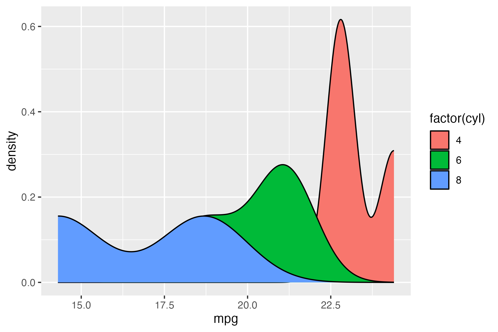

rush is an R package that lets you run R expressions and create plots directly from the shell.
Each invocation assembles a small, self-contained R script and runs it with ir, the R interpreter launcher from r-lib. ir reads the script’s #| frontmatter and installs whatever packages the script needs on the fly, so rush itself stays lightweight.
Installation
First install ir. Then install rush as an ir tool, which puts a rush launcher on your PATH:
Examples
Once installed, invoke rush from the command line:
Read from standard input:
Write to standard output:
rush run 'head(mtcars, 10)' | tee mtcars.csv
#> mpg,cyl,disp,hp,drat,wt,qsec,vs,am,gear,carb
#> 21,6,160,110,3.9,2.62,16.46,0,1,4,4
#> 21,6,160,110,3.9,2.875,17.02,0,1,4,4
#> 22.8,4,108,93,3.85,2.32,18.61,1,1,4,1
#> 21.4,6,258,110,3.08,3.215,19.44,1,0,3,1
#> 18.7,8,360,175,3.15,3.44,17.02,0,0,3,2
#> 18.1,6,225,105,2.76,3.46,20.22,1,0,3,1
#> 14.3,8,360,245,3.21,3.57,15.84,0,0,3,4
#> 24.4,4,146.7,62,3.69,3.19,20,1,0,4,2
#> 22.8,4,140.8,95,3.92,3.15,22.9,1,0,4,2
#> 19.2,6,167.6,123,3.92,3.44,18.3,1,0,4,4Show generated script with the --dry-run option:
< mtcars.csv rush plot --dry-run --x mpg --geom density --fill 'factor(cyl)'
#> #!/usr/bin/env -S ir run
#> #| packages:
#> #| - rlang
#> #| - cli
#> #| - tibble
#> #| - readr
#> #| - ggplot2
#> #| - fs
#> #| - github::coolbutuseless/devout
#> #| - github::jeroenjanssens/miniansi
#> #| - github::coolbutuseless/devoutansi
#> #| - janitor
#>
#> .rush <- list(
#> output = NULL,
#> width = NULL,
#> height = NULL,
#> units = "in",
#> dpi = 300,
#> delimiter = ",",
#> has_post = FALSE
#> )
#>
#> library(ggplot2)
#> df <- janitor::clean_names(readr::read_delim(file("stdin", "rb", raw = TRUE), delim = ",", col_names = TRUE))
#> result <- ggplot(df, aes(x = mpg, fill = factor(cyl))) + geom_density()
#>
#> #~~~ Output dispatch (added by rush) ~~~~~~~~~~~~~~~~~~~~~~~~~~~~~~~~~~~~~~~~~
#> .has_tty <- isatty(stdout())
#> .stdout_binary <- function() {
#> if (.Platform$OS.type == "windows") file("stdout", "wb", raw = TRUE)
#> else file("/dev/stdout", "wb", raw = TRUE)
#> }
#>
#> out <- .rush$output
#> w <- .rush$width
#> h <- .rush$height
#> if (is.null(out)) out <- if (.has_tty) "ansi" else "png"
#>
#> if (out %in% c("ansi", "ascii")) {
#> if (is.null(w)) w <- cli::console_width()
#> devoutansi::ansi(width = w, height = h, plain_ascii = TRUE, char_lookup_table = 2)
#> if (!.rush$has_post) {
#> result <- result +
#> ggplot2::theme_minimal() +
#> ggplot2::theme(panel.grid = ggplot2::element_blank())
#> }
#> print(result)
#> invisible(grDevices::dev.off())
#> } else {
#> if (fs::path_ext(out) == "") {
#> output_filename <- tempfile()
#> device <- out
#> cat_output <- TRUE
#> } else {
#> output_filename <- out
#> device <- NULL
#> cat_output <- FALSE
#> }
#> if (is.null(w)) w <- 6
#> if (is.null(h)) h <- 4
#> ggplot2::ggsave(output_filename, result, device = device,
#> width = w, height = h, units = .rush$units, dpi = .rush$dpi)
#> if (cat_output) {
#> contents <- readBin(output_filename, raw(), n = 1e8)
#> writeBin(contents, .stdout_binary())
#> }
#> }Create plots with the plot command:

Help
rush -h
#> rush: R Scripting at the Command Line
#>
#> Usage:
#> rush [options] <command> [<args>]
#>
#> Options:
#> -n, --dry-run Only print generated script.
#> -h, --help Show this help.
#> -q, --quiet Be quiet.
#> --seed <int> Seed random number generator.
#> -v, --verbose Be verbose.
#> --version Show version.
#>
#> Commands:
#> plot
#> runrush run -h
#> rush: Run an R expression
#>
#> Usage:
#> rush run [options] <expression> [--] [<file>...]
#>
#> Reading options:
#> -d, --delimiter <str> Delimiter [default: ,].
#> -C, --no-clean-names No clean names.
#> -H, --no-header No header.
#>
#> Setup options:
#> -l, --library <name> Libraries to load.
#> -t, --tidyverse Enter the Tidyverse.
#>
#> Saving options:
#> --dpi <str|int> Plot resolution [default: 300].
#> --height <int> Plot height.
#> -o, --output <str> Output file.
#> --units <str> Plot size units [default: in].
#> -w, --width <int> Plot width.
#>
#> General options:
#> -n, --dry-run Only print generated script.
#> -h, --help Show this help.
#> -q, --quiet Be quiet.
#> --seed <int> Seed random number generator.
#> -v, --verbose Be verbose.
#> --version Show version.rush plot -h
#> rush: Quick plot
#>
#> Usage:
#> rush plot [options] [--] [<file>|-]
#>
#> Reading options:
#> -d, --delimiter <str> Delimiter [default: ,].
#> -C, --no-clean-names No clean names.
#> -H, --no-header No header.
#>
#> Setup options:
#> -l, --library <name> Libraries to load.
#> -t, --tidyverse Enter the Tidyverse.
#>
#> Plotting options:
#> --aes <key=value> Additional aesthetics.
#> -a, --alpha <name> Alpha column.
#> -c, --color <name> Color column.
#> --facets <formula> Facet specification.
#> -f, --fill <name> Fill column.
#> -g, --geom <geom> Geometry [default: auto].
#> --group <name> Group column.
#> --log <x|y|xy> Variables to log transform.
#> --margins Display marginal facets.
#> --post <code> Code to run after plotting.
#> --pre <code> Code to run before plotting.
#> --shape <name> Shape column.
#> --size <name> Size column.
#> --title <str> Plot title.
#> -x, --x <name> X column.
#> --xlab <str> X axis label.
#> -y, --y <name> Y column.
#> --ylab <str> Y axis label.
#> -z, --z <name> Z column.
#>
#> Saving options:
#> --dpi <str|int> Plot resolution [default: 300].
#> --height <int> Plot height.
#> -o, --output <str> Output file.
#> --units <str> Plot size units [default: in].
#> -w, --width <int> Plot width.
#>
#> General options:
#> -n, --dry-run Only print generated script.
#> -h, --help Show this help.
#> -q, --quiet Be quiet.
#> --seed <int> Seed random number generator.
#> -v, --verbose Be verbose.
#> --version Show version.Terminal plotting
When you run rush plot in a terminal (rather than redirecting its output to a file), it renders the plot directly as ANSI/ASCII art. This relies on three packages that are not on CRAN — devout, miniansi, and devoutansi — but you do not need to install them yourself: rush declares them in the generated script’s frontmatter, and ir fetches them from GitHub the first time they are needed.
Code of Conduct
Please note that the rush project is released with a Contributor Code of Conduct. By contributing to this project, you agree to abide by its terms.